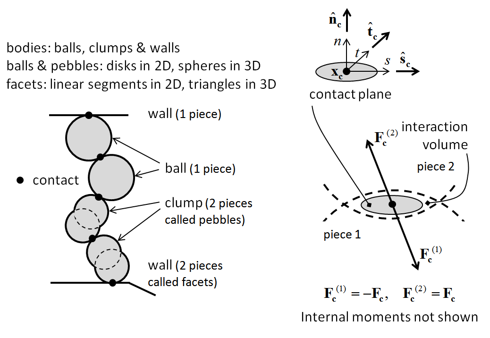

模型组件
在 PFC 模型中，每个颗粒都称为一个体，以明确表明它并非质点；体是具有有限尺寸和确定表面的离散刚体。PFC 模型中包含体、部件和接触。体共有三种类型：球颗粒（balls）、刚性簇（clumps）和墙（walls）。每个体由一个或多个部件组成。球颗粒是{二维中的单位厚度圆盘；三维中的球体}。刚性簇是由子颗粒组成的集合体，子颗粒是{二维中的单位厚度圆盘；三维中的球体}。刚性簇用于模拟任意形状的刚体。构成刚性簇的子颗粒之间可以重叠，但它们之间不存在接触；接触形成于子颗粒与其他体的部件之间。墙是面片的集合，面片是{二维中的线段；三维中的三角形}，并构成流形且可定向的表面。体可以具有表面性质，这些性质可赋予体表面上的各个部件；这些表面性质可用于确定部件之间的相互作用。体存在于模型域（model domain）内，不能移出该区域。
球颗粒和刚性簇的运动服从牛顿运动定律，而墙的运动由用户指定；因此，只有球颗粒和刚性簇具有质量属性（质量、形心位置和惯性张量）以及荷载条件（由接触施加的力/力矩、由重力产生的体力，以及外部施加的力/力矩）。
接触力学通过颗粒相互作用法则体现，这些法则采用软接触方法，即所有变形都发生在刚体之间的接触处。两个体的表面之间的力学相互作用发生在一个或多个成对的力学接触上。接触在循环序列（cycle sequence）的 接触检测（contact detection） 步骤中根据部件的邻近程度创建和删除。接触为两个部件 [1] 之间提供一个交界面。该交界面由一个接触面构成，接触面的位置为 \((\mathbf{x_c})\)、法向为 \((\hat{\mathbf{n}}_\mathbf{c})\)、坐标系为 \((nst)\)。接触面位于两个部件的相互作用体积（间隙或重叠）的中心，与两个部件相切，并经过旋转，以确保部件表面的相对运动相对于接触面保持对称。每个接触都存储一个力 \((\mathbf{F_c})\) 和一个力矩 \((\mathbf{M_c})\)，它们在接触位置处以大小相等、方向相反的方式作用于两个体 [2]。内力/力矩由颗粒相互作用法则更新。该相互作用法则利用两个部件的位置和相对运动来更新力/力矩。我们将该颗粒相互作用法则称为接触模型（contact model）。表面性质也可作为输入 [3]。


图 1：一个 PFC 模型的示意图，展示了体、部件与接触（左），以及带有内部作用 力的接触平面（右）。
PFC 模型通过执行命令来创建和操控。与每个 PFC 模型组件相关的命令在介绍该组件的章节中详细说明（即“球颗粒（Balls）”、“刚性簇（Clumps）”、“墙（Walls）”和“接触与接触模型（Contacts and Contact Models）”各节）。此外还提供了许多附加工具以简化建模过程；这些工具在“通用模型对象（Common Model Objects）”一节中介绍。与 PFC 模型组件相关的所有命令列表可在 PFC 命令汇总（PFC Command Summary） 一节中查阅。本文档中全部命令的索引（包括 FLAC3D 和 3DEC 命令）见 综合命令索引（Comprehensive Command Index） 一节。
PFC 模型的几乎各个方面都可以通过一种称为 FISH 的内部脚本语言来访问。请参阅“FISH 脚本参考（FISH Scripting Reference）”一节以了解 FISH 的介绍。与命令类似，FISH 函数可用于访问/修改 PFC 模型组件，这些函数在介绍相应组件的章节中详细说明。所有 FISH 函数的列表（与 PFC 模型组件相关）可在“索引：PFC FISH 函数（Index: PFC FISH Functions）”一节中查阅。本文档中的全部 FISH 函数（包括 FLAC3D 和 3DEC 函数）也同样在 综合索引（Comprehensive） 一节中给出。
– 下一节：循环计算（Next Section: Cycling） –
尾注
| [1] | 接触按照两个部件的类型来指称。例如，球颗粒与面片之间的接触称为 ball-facet 接触，其接触类型为 ball-facet。在当前的 PFC 模型中，不允许存在 facet-facet 接触，并且部件一为球颗粒或子颗粒，部件二为球颗粒、子颗粒或面片，由此得到五种唯一的接触类型：ball-ball、ball-pebble、ball-facet、pebble-pebble 和 pebble-facet。 |
| [2] | 模拟远距离相互作用的接触模型会更新作用力与两个力矩，而这些力和力矩不必大小相等、方向相反。 |
| [3] | 接触模型属性可以通过 接触模型分配表（CMAT）（Contact Model Assignment Table (CMAT)） 直接指定。此外，还可以利用继承的概念来指定是否使用部件属性来覆盖默认的接触模型属性。 |
| 这些内容对您有帮助吗？… | FLAC3D © 2019, Itasca | 原文更新于 2020 年 10 月 8 日 |
| 版权与免责声明 | ||